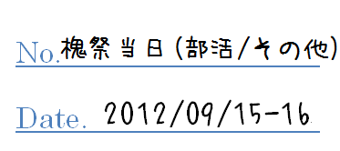
当日の様子/部活動・有志団体・その他の団体
§中学部活動
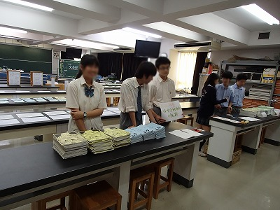
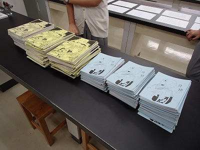
中学Literature Club・高校文芸部
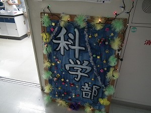
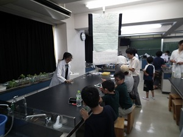
中学科学部
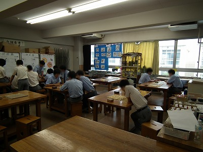
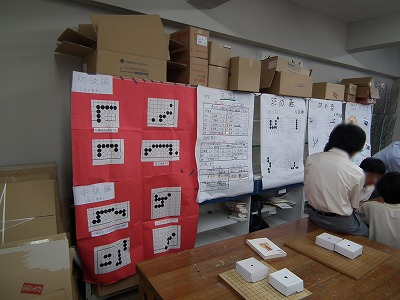
中学将棋部・高校囲碁将棋同好会
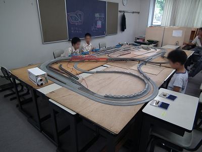
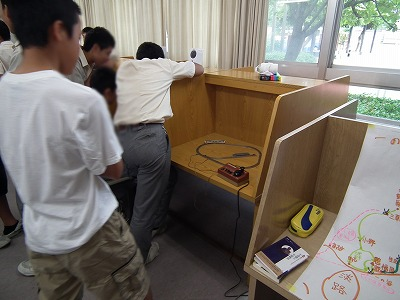
中学鉄道研究同好会
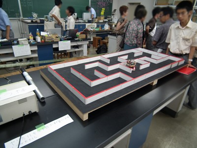
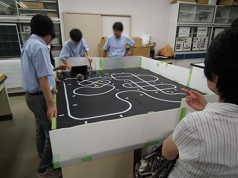
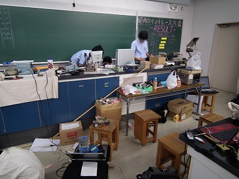
中学電気部・高校物理部
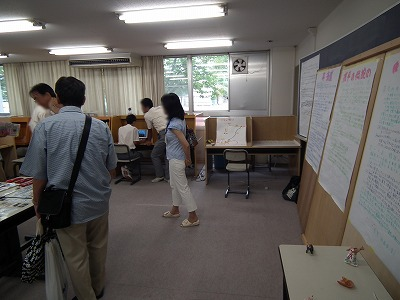
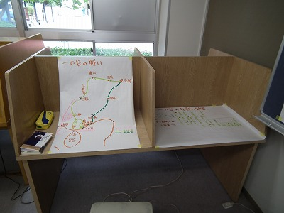
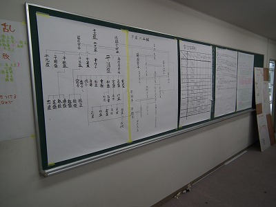
中学歴史研究同好会
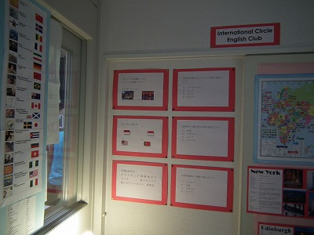
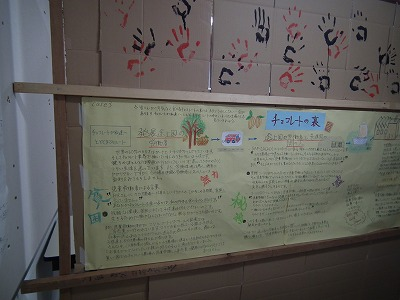
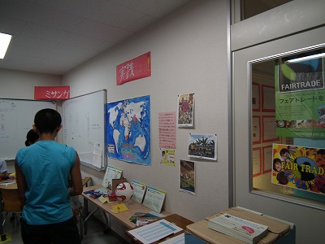
中高インターナショナル同好会
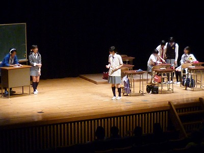
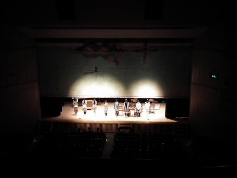
中高演劇部
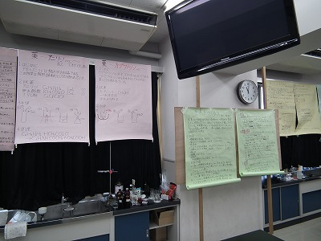
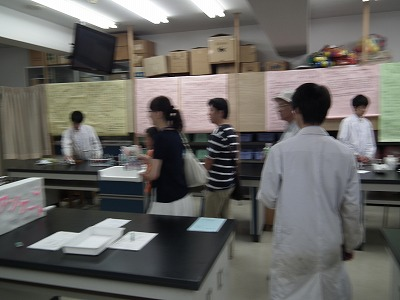
中高化学部
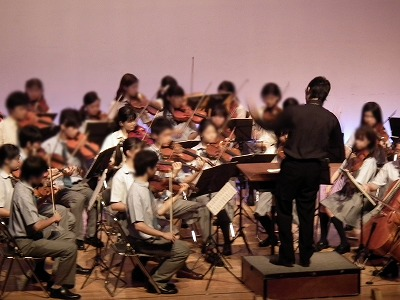
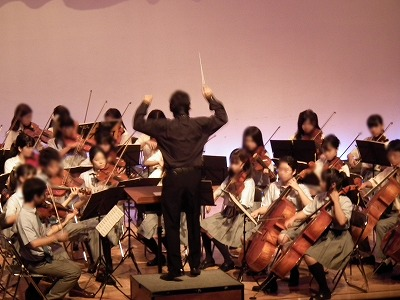
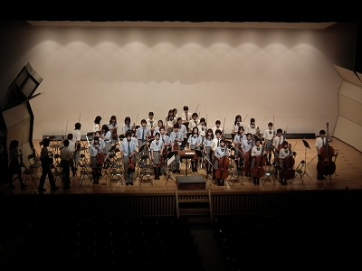
中高室内楽部
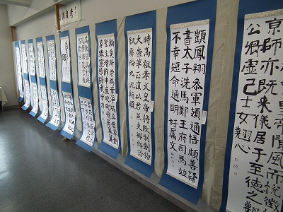
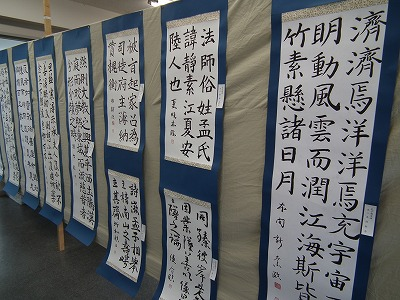
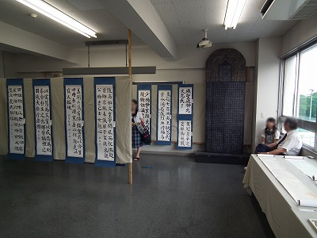
中高書道部
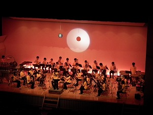
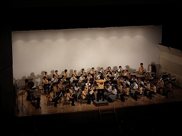
中高吹奏楽部
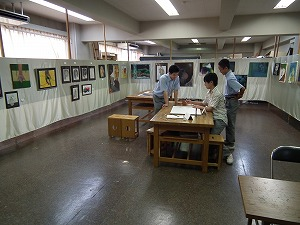
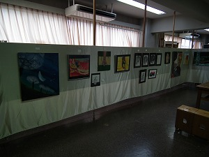
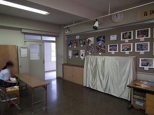
中高美術部
§高校部活動
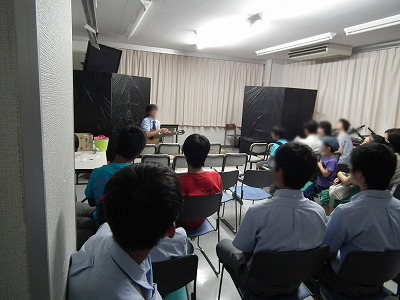
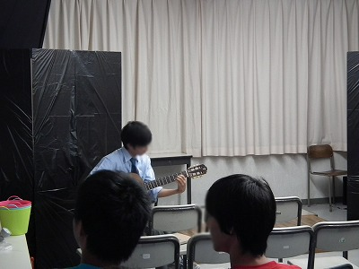
高校アコースティックギター同好会
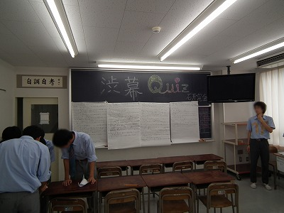
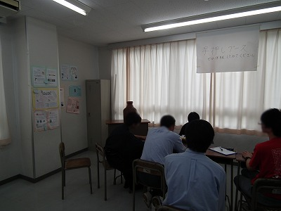
高校クイズ研究同好会
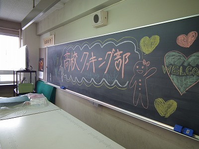
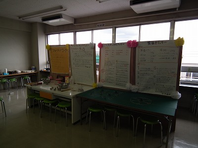
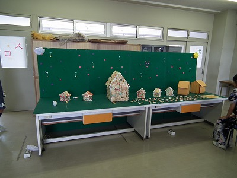
高校クッキング部
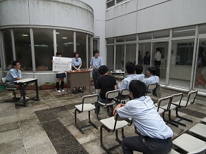
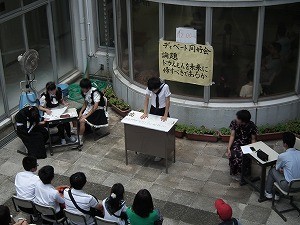
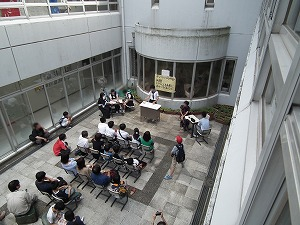
高校ディベート同好会
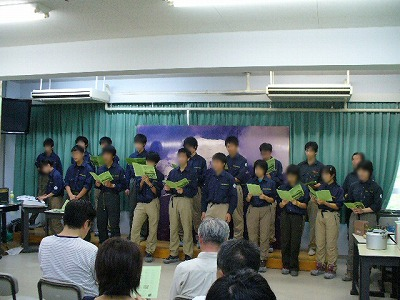
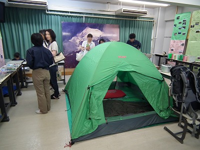
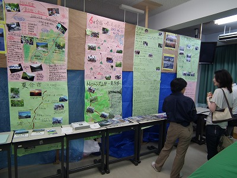
高校ワンダーフォーゲル部
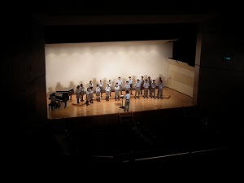
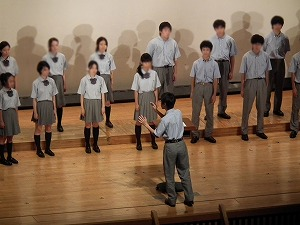
高校合唱部
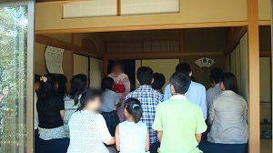
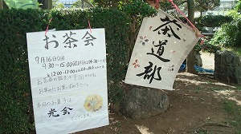
高校茶道部
高校天文部
高校ギター部
高校写真部
§有志団体
チーム☆たかひさ
歓迎門
休憩所
古本市
高１広島研修委員会
国際部
糸電話の会
中学学年展示
緑の会
ノザワングランプリ
自調自考論文
目次へ戻る
学校homeへ